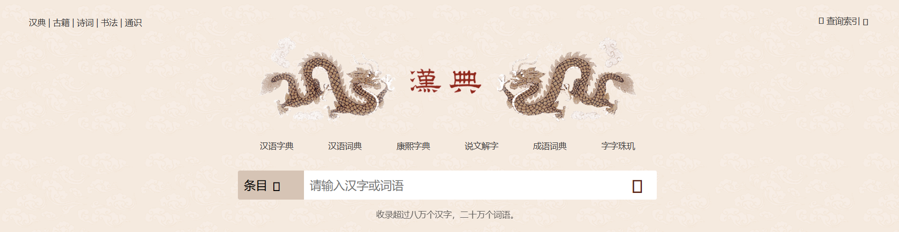
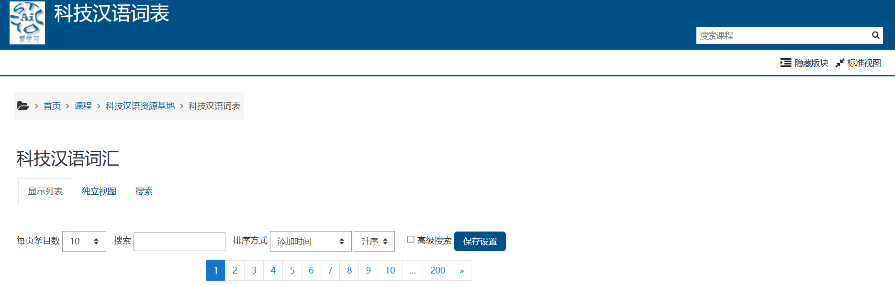

学习工具推荐
汉典

汉典是一个面向广泛受众、含有丰富及有益内容的教育和信息网站。 汉典始建于2004年，是一个有着巨大容量的字、词、词组、成语及其他中文语言文字形式的免费在线辞典。 汉典的宗旨是介绍中国文化、历史和语言，为那些在中文学习、研究方面有兴趣的人提供说明与服务，并探讨中文语言文字使用的规范和标准。如果你需要查询汉字的读音、字形、意义以及来源等等，都可以使用汉典。
Handian is an educational and informational website with rich and useful content for a wide audience. Founded in 2004, Handian is a free online dictionary with a huge capacity of words, words, phrases, idioms and other Chinese language and written forms. The purpose of the Chinese Classics is to introduce Chinese culture, history and language, to provide explanations and services for those interested in Chinese study and research, and to explore the norms and standards for the use of Chinese languages. If you need to look up the pronunciation, glyph shape, meaning, and origin of Chinese characters, you can use Handian.
使用链接：https://www.zdic.net/
中文语法维基

中文语法维基是一个全面、实用且免费的在线资源，旨在引导普通话学习者了解汉语语法的微妙之处。 在其他用途中，Chinese Grammar Wiki 是研究特定 HSK 级别的语法模式的绝佳资源（例如： B1 语法点)，深入研究特定语法点的复杂性，或通过综合汉语系列（例如： 综合汉语 1 级第 1 部分).如果你需要查询语法点的意义及用法，都可以使用中文语法维基。
The Chinese Grammar Wiki is a comprehensive, practical, and free online resource designed to guide Mandarin learners through the subtleties of Chinese grammar. Among other uses, Chinese Grammar Wiki is an excellent resource for studying grammar patterns at a specific HSK level (e.g., B1 grammar points), delving into the intricacies of a particular grammar point, or through Chinese the Integrated Chinese series (e.g., Integrated Chinese Level 1 Part 1).
使用链接：https://resources.allsetlearning.com/chinese/grammar/
科技汉语词表

在这里，你可以通过汉语拼音或其他语言检索到到科技汉语相关词汇，科技汉语词表会提供准确的翻译和解释。
Here, you can search for technical Chinese vocabulary through Hanyu Pinyin or other languages, and the technical Chinese vocabulary list will provide accurate translations and explanations.
使用链接：https://istudy.tju.edu.cn/mod/data/view.php?id=11330